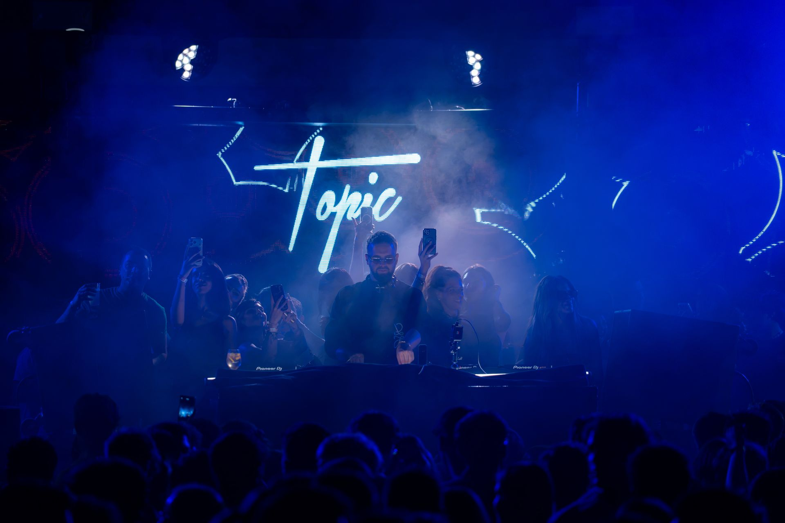
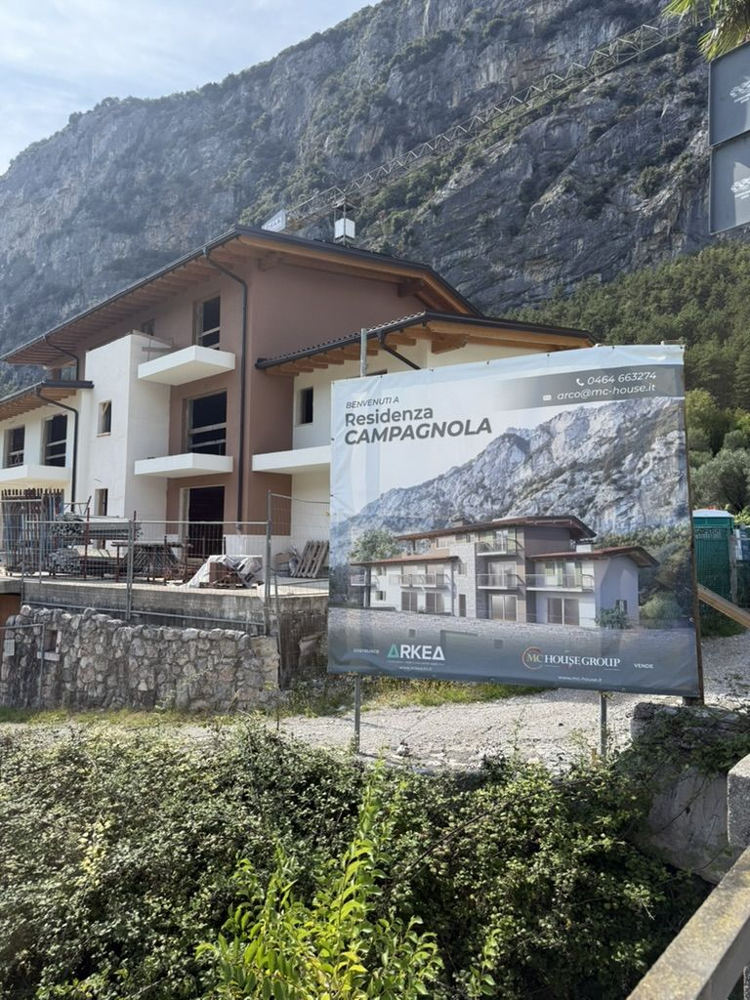
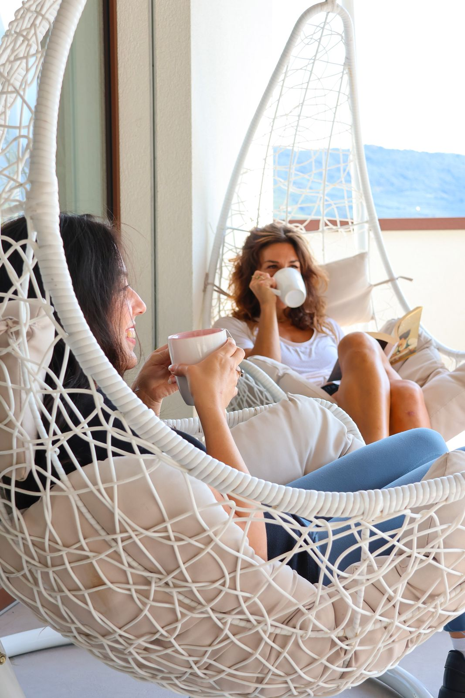
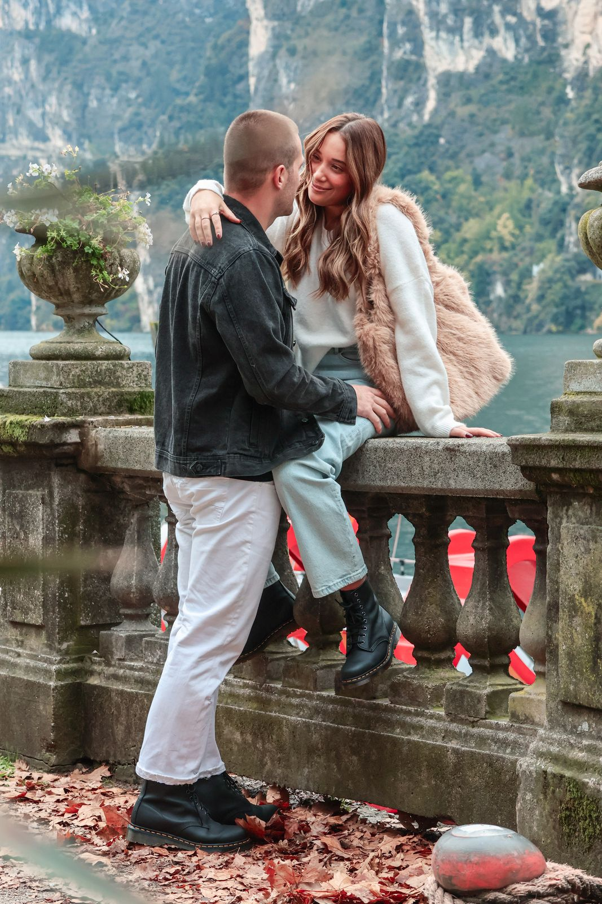

EM Studio — Comunicazione e marketing









(01) — EM STUDIO
Il bello è vedere quello che gli altri non vedono.
EM Studio è uno spazio creativo in continua evoluzione, dove idee, competenze e punti di vista diversi si incontrano. Un team che prende forma attorno a ogni progetto.